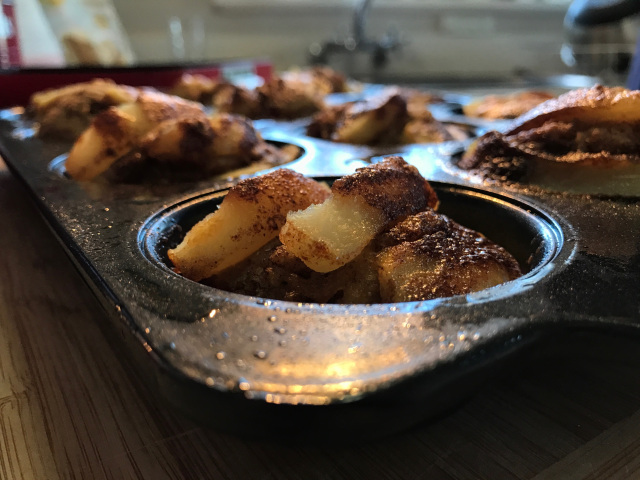

An article
13th October 2017
I’ve heard the comment more than once that tinned pears are the least exciting of the tinned fruits….pale, bland, only good when topped with ice cream. I had a hunch that this was wrong, but how to prove it? By coupling tinned pears with brown sugar, butter and cinnamon, that’s how.
2 Comments